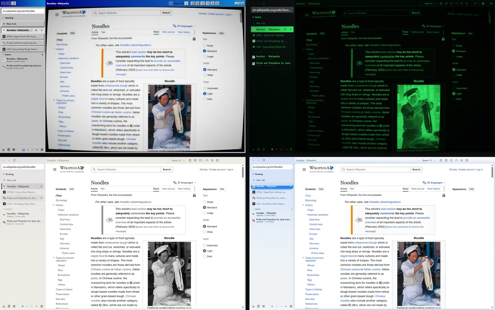

For developers
Agents, scripts and skins.
Noodle is open source under the AGPL. Three parts of it are made for you to extend, and each has full docs in the repository.
Connect an agent
Turn the server on in Settings, Agent. It lives at http://127.0.0.1:47821/mcp (Streamable HTTP) and every request needs the token as a bearer header. Clients that only start local commands use the stdio bridge that ships with Noodle.
Every result starts with a typed status such as navigated, element_not_found or waiting_for_human, so a harness can branch without reading the text.

{
"type": "http",
"url": "http://127.0.0.1:47821/mcp",
"headers": { "Authorization": "Bearer <token>" }
}Tools: list_tabs, open_tab, close_tab, snapshot, act, read_page, find, extract, check, devtools, screenshot, plus any your userscripts add.
Write a userscript
Scripts for Tampermonkey and Violentmonkey run as they are. Noodle adds one thing on top: a script can register tools that agents call over MCP, after you approve.
The examples folder has a starter that shows an article's reading time, one that hides YouTube Shorts, and one that gives agents a get_transcript tool.
// ==UserScript==
// @name YouTube tools
// @namespace noodle.examples
// @version 1.0
// @match https://www.youtube.com/*
// @run-at document-idle
// @grant noodle.tools
// @noodle-tool-url https://www.youtube.com/
// ==/UserScript==Make a skin
Copy the starter skin, change the tokens in skin.json, add CSS for anything the tokens don't cover, and run it in dev mode so every save reloads it. The guide lists every token and layout key, the page effects, and how Classic 98 was made.
A command line checker and packer run from a checkout of the source.

Build from source
You need Node.js 22.12 or newer and Git. On Windows, install the Visual Studio Build Tools with the "Desktop development with C++" workload in case the SQLite module has to compile.
git clone https://github.com/udaysinh-git/noodle.git
cd noodle
npm ci
npm run devnpm run dist builds an installer for the current platform. Contributors sign a contributor license agreement before their first pull request is merged, and CONTRIBUTING.md explains it in plain words.
All the docs
Agents
Setup for common clients, every tool and result, approvals and limits.
Userscripts
Writing scripts, the GM API and tools for agents.
Skins
Every token and layout key, page effects and the skin CLI.
Also: downloads and media, reader view, keyboard shortcuts and building.